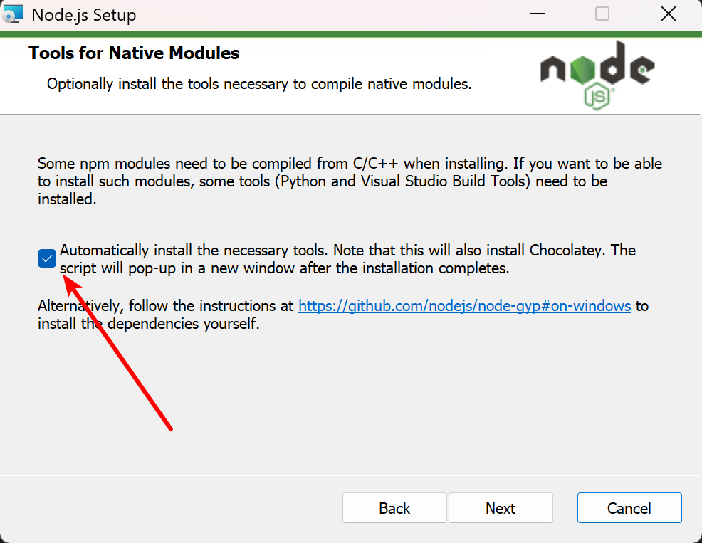

node --version检查当前版本;npm xxxx --registry=https://registry.npmmirror.comnpm config set registry https://registry.npmmirror.com安装: npm i -g opencode-ai --registry=https://mirrors.aliyun.com/npm/
官方文档: https://opencode.ai/docs/zh-cn/tui/
常用命令:
/init: 创建/更新Agents.md文件, 该文件用于这有助于 opencode 更好地导航您的项目;/models: 列出以及切换使用的大模型;/connect: 将提供商添加到 OpenCode。允许您从可用的提供商中选择并添加其 API 密钥;/compact: 压缩上下文, 在上下文比较大时, 后续大模型分析推理会变慢, 压缩上下文可以提速;/new: 开始新的会话;/sessions: 列出会话并在会话之间切换;/undo: 撤销对话中的最后一条消息。移除最近的用户消息、所有后续响应以及所有文件更改。
/redo: 重做之前撤销的消息。仅在使用 /undo 后可用。
/exit: 退出安装: npm install -g @fission-ai/openspec
openspec目录结构:
openspec/
├── specs/ # 系统当前行为的"源真相"("系统现在是什么样的")
│ ├── auth/
│ ├── payments/
│ └── ...
├── changes/ # 每个变更的独立工作目录("我们打算改什么")
│ ├── add-dark-mode/
│ | ├── specs #
│ | ├── proposal.md
│ | ├── design.md
│ | └── tasks.md
│ └── fix-login-bug/
└── config.yaml # 项目配置
对于没有运行过openspec的新项目, 需要先执行openspec init, 对当前所在目录的项目进行初始化:
openspec文件夹用来存储后续的规格文件;opencode, 就会在.opencode目录中注册openspec相关skills常用命令:
/opsx:propose xxx: 告诉AI你的需求, 触发它去写各种规格文件(工件);/opsx:apply: 工件准备好了，可以人工检查一下, 没问题, 就让 AI 按 tasks.md 里的清单逐条干活;/opsx:archive: 功能实现完了，归档这个变更
/opsx:explore xxx: 对于有些需求模糊不确定的, 让AI主动探索, 明确需求, 然后再执行上面3步/opsx:verify: 扩展指令, 在需求开发完, 未归档之前, 让AI检查一下是否有工作遗漏常用工作流: /opsx:propose → 人工审查 → /opsx:apply → /opsx:verify → /opsx:archive
扩展指令的启用:
openspec config profile;Delivery and workflows;Both;空格勾选需要开启的命令;